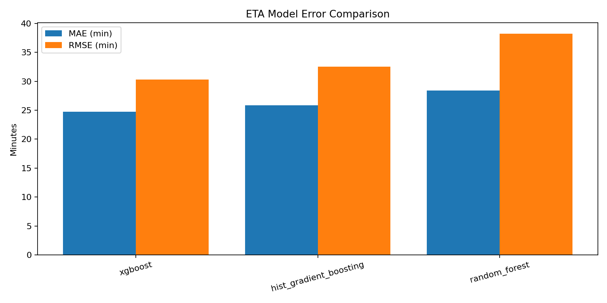
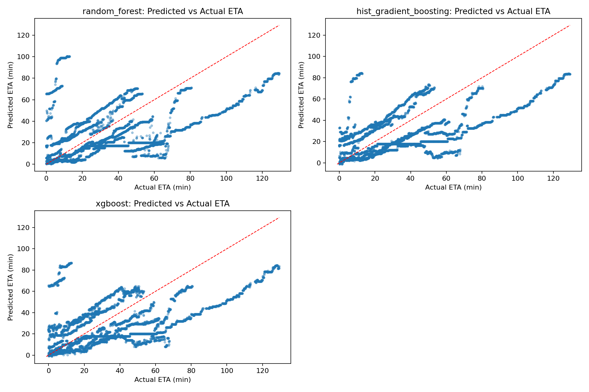
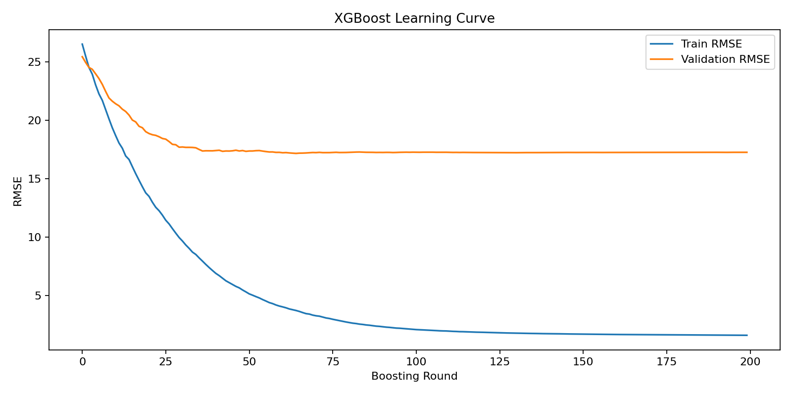

Kolkata Bus ETA Model Documentation
This page documents data collection, cleaning, snapping, feature engineering, model selection, training outputs, and deployment usage.
1) Project Summary
Model artifact file: model_outputs/eta_model.joblib (this is the trained model bundle).
2) Data Collection and Route Baselines
Golden baseline sessions currently enforced: morning Home-to-Office => 43, evening Office-to-Home => 35.
3) CSV Schema and Column Meaning
Raw CSV Columns
Training Features Used
Rejected or Non-training Fields
4) Data Cleaning and Snapping Strategy
GPS points are cleaned and snapped onto route baselines to reduce apparent off-road jumps. The latest snapping is sequence-aware and elastic: nearest projection to baseline polyline + monotonic progress enforcement + stretch/compress redistribution to avoid greedy clumping and teleport-like skips on diverge/converge route segments.
Output snapped dataset folder: csv_snapped
5) Partial Session Handling
Sessions with incomplete route coverage are retained. The observed section contributes directly, while missing bins are imputed from weighted route profiles built across sessions. This allows training on both full and partial tracks without discarding useful signal.
6) Model Selection and Metrics
Compared models include Random Forest, Hist Gradient Boosting, and XGBoost.
Error Comparison (MAE / RMSE)

Predicted vs Actual

XGBoost Learning Curve

7) Training Parameters
- Route references: morning=43, evening=35
- Bin size: 120 meters
- Group-aware split by session ID
- Features: route type, vehicle class, time-of-day, weekday, route progress, off-route distance, local/global speed context, support count
- Target: ETA remaining minutes
8) Deployed Usage
Use the deployed app at eta_model_app.html.
- Choose route (morning/evening) and start time.
- Click a geographic point on the baseline polyline.
- Run prediction to get ETA and expected arrival time.
- Inspect choke points colored by congestion (green/yellow/red).
9) Limitations and Edge Cases
- Small dataset size may limit generalization stability.
- Traffic changes by day/event/weather are not explicitly modeled yet.
- Snapped baselines simplify geometry, which improves consistency but can suppress true detour behavior.